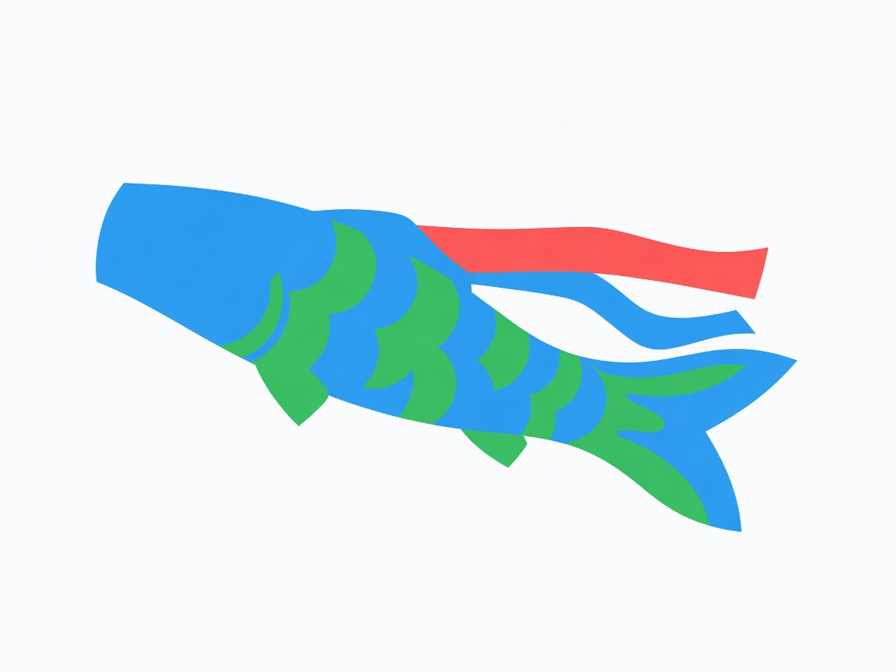
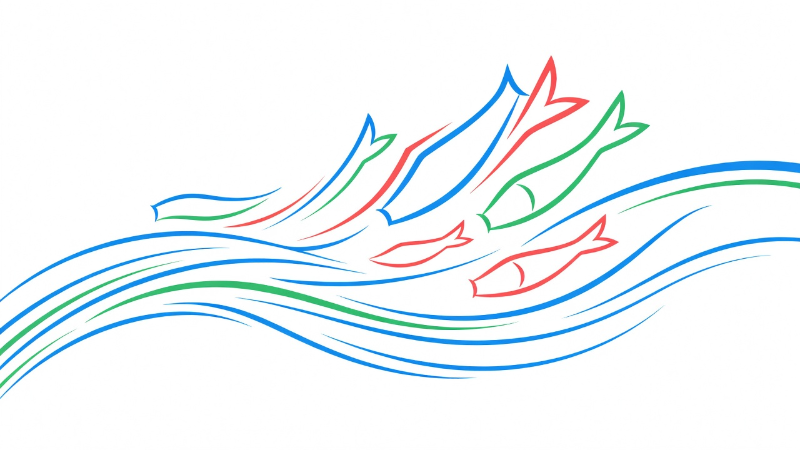
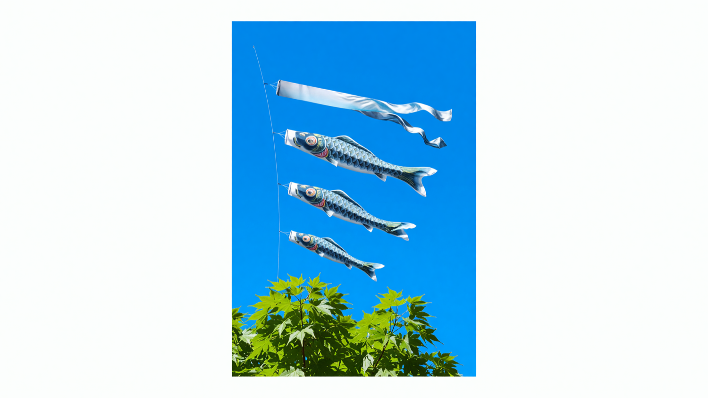

Sōryū is the planning platform for Kodomo no Hi — organize your koinobori display, coordinate neighborhood gatherings, and build wish-lists for the children you love. One current, rising together.

Pick your streamer set, map it to your pole or balcony, and see a live preview before you raise anything. Sōryū handles wind direction, height clearance, and color coordination automatically.
Coordinate block-party style gatherings with shared checklists, potluck sign-ups, and a live map of every koinobori display on your street. See the wind move through your whole community at once.

Create a living wish-list for each child — books, experiences, streamers for next year, and the things they're dreaming of right now. Family members contribute from anywhere, and every gift carries a note.

From first spark to a full neighborhood of streamers in the sky — Sōryū guides every step.
Name your event, set the date, and invite family and neighbors in under two minutes. Sōryū generates a shareable link instantly.
Choose your koinobori set, preview it against your home, and let Sōryū coordinate colors and wind placement for the perfect rise.
On the day, your dashboard goes live — track displays on the neighborhood map, manage the gathering, and capture the memories.
"Last year our block had three displays. This year we have twenty-seven. Sōryū made it effortless to see who was raising what, and the kids ran between houses like it was a festival trail."
Free for families. Pro for neighborhoods and community groups.